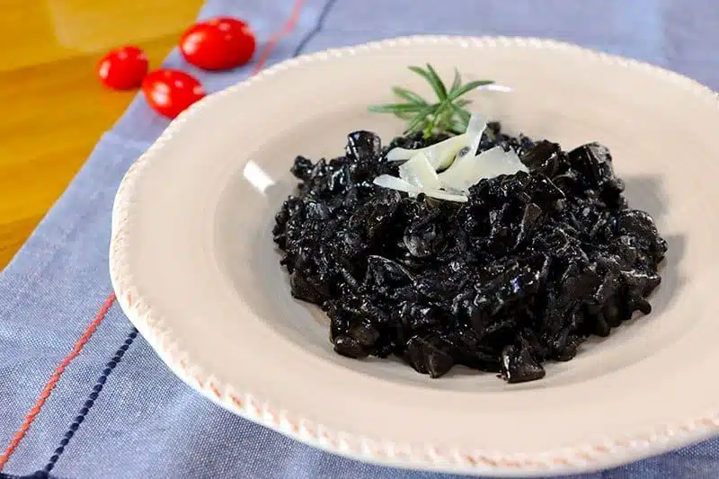
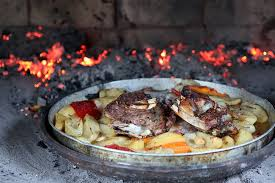
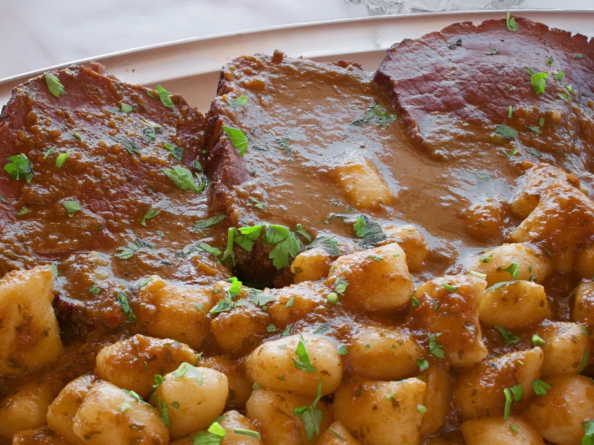

Most Popular Foods in Croatia

Crni rizot
In Croatian, it means just that: crni means black, and rižot is a risotto. This black cuttlefish risotto is a love-or-hate dish. Probably because it's as black as night.

Peka
A roast meal of either meat or seafood with potatoes and assorted veggies. Peka also refers to a bell-shaped lid (usually steel or cast iron) that sits on top of a tray with food.

Pasticada
A braised beef dish cooked in a fragrant sweet and sour sauce, popular in Croatia. It is often called Dalmatinska pašticada because it originates in Dalmatia, where it is served at festivities and gatherings.